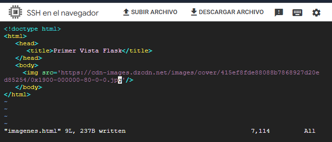
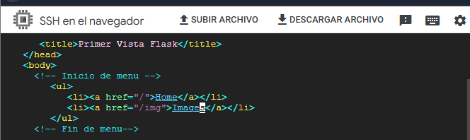
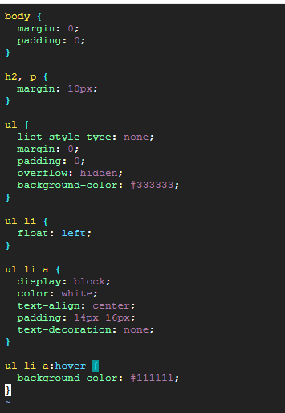
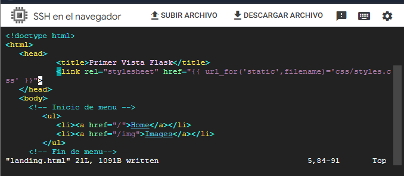

🎯 Objetivo de la actividad
Construir una pagina web navegable con multiples rutas en Flask, creando un menu para moverse entre Home e Images.
Ademas, aplicar Jinja para separar presentacion y logica, y enlazar estilos CSS desde la carpeta static
usando url_for() para rutas dinamicas y limpias.
🖼️ Agregar pagina de imagenes
Se creo la vista imagenes.html y se inserto una imagen publica con la etiqueta img.
Esto permite ampliar la app mas alla del contenido de landing.html.
<img src="url.jpg">
Figura 1: Archivo imagenes.html con insercion de una imagen mediante URL.
🧭 Menu navegable entre rutas
Se agrego un menu en landing.html y se replico en imagenes.html para mantener navegacion consistente
entre la ruta principal y la ruta de imagenes.
<!-- Inicio de menu -->
<ul>
<li><a href="/">Home</a></li>
<li><a href="/img">Image</a></li>
</ul>
<!-- Fin de menu -->
Figura 2: Estructura del menu HTML para las rutas / y /img.
🎨 Estilos CSS en carpeta static
Para aplicar estilo, se creo la carpeta static/css y el archivo styles.css con formato de menu,
margenes y estado :hover.
mkdir static
cd static
mkdir css
cd css
vi styles.css
Figura 3: Reglas CSS para menu horizontal y estilos base de la pagina.
🧠 Jinja y url_for para archivos estaticos
Se uso Jinja en las plantillas para enlazar CSS de forma correcta y dinamica desde Flask, evitando rutas fijas y mejorando mantenimiento del proyecto.
<link rel="stylesheet" href="{{ url_for('static', filename='css/styles.css') }}">
Figura 4: Vinculacion del CSS con Jinja usando url_for('static', ...).
📘 Aprendizajes
Navegacion por rutas
Se comprendio como definir rutas Flask y conectarlas con enlaces para una experiencia navegable.
Separacion de responsabilidades
Se reforzo el uso de templates para separar la logica Python del HTML de presentacion.
Uso profesional de estaticos
Con url_for() se enlazan recursos estaticos de forma dinamica y portable dentro de Flask.